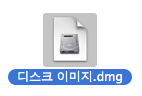
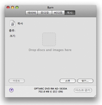
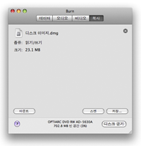
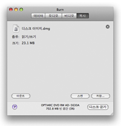

디스크 복사:
Burn은
디스크 이미지를 사용할 수 있습니다. 디스크 이미지란 디스크 내용을 담고 있는 파일입니다. Burn은
또한 실제 디스크의 복사도 도와드립니다.
주의: 오디오 CD를 제외한 다중 세션의 디스크는 복사할 수 없습니다.
다중 세션 오디오 CD도 정확한 복사본이 만들어지지는 않습니다.
맥 OS X 10.3 팬서에서는 .cdr, .toast, .iso와 아주 기본적인 .cue/bin만을 구울 수 있습니다.
맥 OS X 10.3 팬서에서 이런 이미지들을 굽기 위해서는 일단 그것을 마운트한 후 그 내용을 목록에 끌어다 놓아야만 합니다.
1 디스크 또는 이미지 파일을 선택합니다:
디스크로 굽고자 하는 디스크 이미지 혹은 실제 디스크를 선택합니다.

2 디스크 이미지 또는 디스크를 창 안으로 끌어다 놓습니다
디스크 이미지(.dmg, .img, .toast, .iso, .cdr, .dvdr, .cue/bin, .toc)
또는 디스크를 Burn의 창 안으로 끌어다 놓습니다.
 

3 "디스크 굽기"를 클릭합니다
클릭하면 대화 상자가 열릴 것입니다.

4 옵션을 선택합니다
굽기 세션의 옵션을 선택합니다. 더 자세한 설정을 위해서는 Burn 메뉴 아래의 환경설정 메뉴를 이용하십시오.

5 디스크를 굽습니다
이제 디스크를 굽기 위해서 "디스크 굽기" 버튼을 클릭합니다.

6 Burn이 디스크를 구울 것입니다
디스크를 굽는 동안 Burn은 대화 상자에서 구워지는 상태를 보여드릴 것입니다.